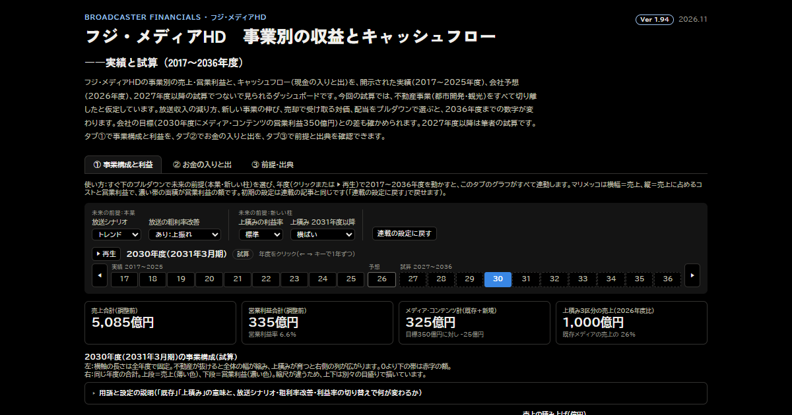

FUJI MEDIA HOLDINGS
フジ・メディアHD 事業別の収益とキャッシュフロー――実績と試算（2017〜2036年度）
フジ・メディアHDの事業別の売上・営業利益とキャッシュフローを、開示実績（2017〜2025年度）、会社予想（2026年度）、試算（2027〜2036年度）でつないで可視化。不動産事業を切り離したと仮定した場合の利益と現金の推移を、前提を選んで確かめられます。
放送局の事業別の売上・営業利益とキャッシュフローを、開示された実績と試算でつないで見るダッシュボード集です。会社ごとに、同じ形のダッシュボードを追加していきます。

フジ・メディアHDの事業別の売上・営業利益とキャッシュフローを、開示実績（2017〜2025年度）、会社予想（2026年度）、試算（2027〜2036年度）でつないで可視化。不動産事業を切り離したと仮定した場合の利益と現金の推移を、前提を選んで確かめられます。